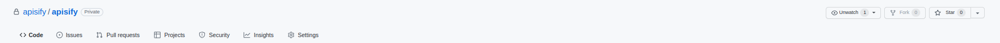
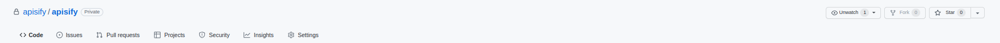

✂｜⑥Clone repository
1. Create an empty private repository from 『”Repositories”->”New”』 on your github profile page.
Repository name: describe freely
Public/Private: Private
Check “Add a README.md file†checkbox
-> Create repository
 

{kind=link}
Warning
Be sure to check that the private batch is attached. If not, change the batch to private by clicking 『”Setting”->”Change visibility”』 in the repository you created.
2. From the account menu, go to 『”Settings”->”Developer Settings”->”Personal access tokens”->”Generate new token”』.

{kind=link}
3. Generate new personal access token and copy the string.
Note: PAT
Check “workflow†checkbox
-> Generate token

{kind=link}
4. From the repository you have created, go to 『”Settings”->”Secrets”->”Actions”->”New repository secret”』.
Name: PAT
Paste the string of personal access token.
-> Add secret
{kind=link}

5. Access the repository you created and create main.yaml by selecting “Actions”->”set up workflow yourself”->”Start commit”.


6. Make sure you have main.yaml in .github/workflow, and then go to 『”Add file”->”Upload files”』 and upload “workflow_clone.yaml”.